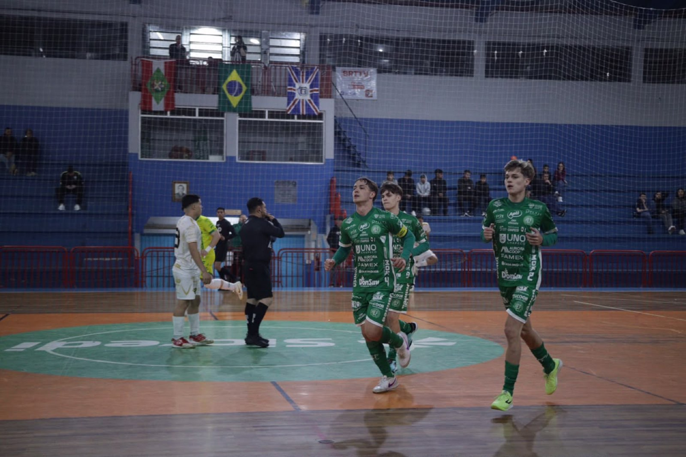

A noite de terça-feira (6) foi decisiva para a Prefeitura de Chapecó/Chapecoense/Unochapecó. O Verdão das Quadras entrou em ação pela segunda partida das quartas de final do Estadual Sub-20 Masculino, campeonato promovido pela Federação Catarinense de Futsal. Jogando fora de casa, o time do técnico Leandro Luciano venceu Caçador por 7 a 2 e está entre os quatro melhores da competição.
A Chape Futsal foi ao Meio-Oeste em vantagem. A equipe verde-branca venceu o confronto de ida por 9 a 3, no ginásio da Unochapecó, na última semana, e se classificava à semifinal até com o empate no Ginásio Flávio Cruz. Contudo, os visitantes foram além: voltaram a ganhar do clube da cidade de Caçador com placar elástico. No agregado, 16 a 5.

O destaque da Chapecoense foi o ala Davi. Ele balançou as redes cinco vezes. Maurício e Eduardo também deixaram a sua marca. Juninho e Raiph fizeram os gols do Caçador. Agora, o Verdão das Quadras aguarda adversário.
Fotos: Chape Futsal